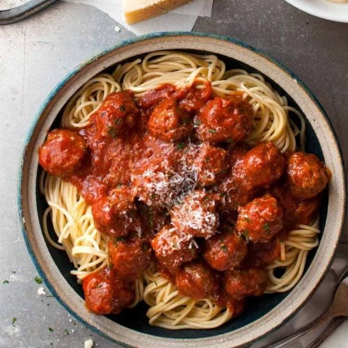

Old-school Italian Spaghetti and Meatballs

Ah spaghetti and meatballs, an all-time family favourite! Provide your family and friends with an ...
Ingredients
- 12 Grass-fed beef meatballs
- 2 tbsp Rice bran oil
- 1 packet spaghetti or pasta of your choice
- 4 tbsp Parmesan cheese
- 2 tbsp olive oil
Procedure
Pasta Sauce:
- On a medium heat, sauté the garlic and onion with oil in a frying pan.
Ensure that they become soft and almost translucent.
- Add the rest of the ingredients to your pan and simmer for another 5mins. After this, remove from the heat.
Cooking and assembly:
- Again, on a medium heat, use a large frying pan to heat the oil. Fry the meatballs in batches and use tongs to ensure that they are well-browned all over. Once your meatballs are cooked through, remove them from the heat.
- Bring a large pot of salted water to the boil. Cook your pasta for 8-10 minutes (or for however long your packet instructs).
- During this time, heat up your sauce in a pan.
Serve:
- Place your pasta in bowls and top with your meatballs and sauce. Finish with shavings of parmesan.
NOTES
TIPS :
- Add a little extra to this everyday dish to including some chilli and sundried tomatoes! Make sure you finish with some fresh herbs and extra parmesan for more indulgence!
Back to homepage